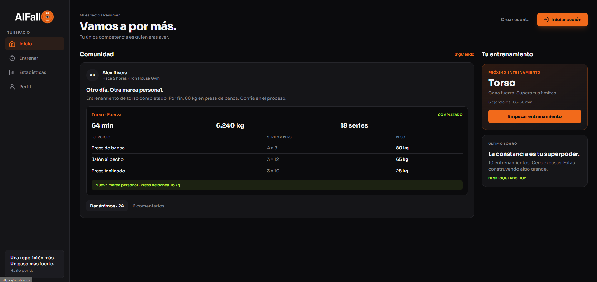

AlFallo
Una app para quien entrena fuerza y quiere ver si progresa: planifica la sesión, apunta series, repeticiones y peso, y detecta solo cuándo bates un récord.
Incluye estadísticas, logros por constancia y un feed donde los usuarios comparten entrenamientos y se animan entre ellos. La diseñé y programé entera, de la base de datos a la interfaz móvil.
- Node.js
- Express
- MongoDB